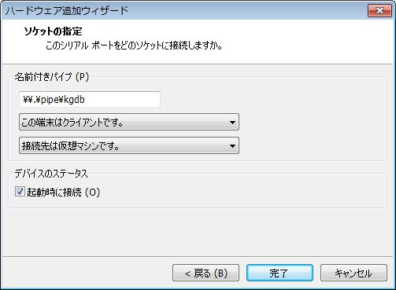
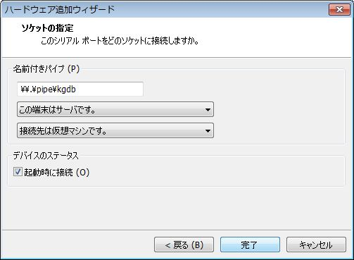

技術/Linux/手作りLinuxシステム/06. Boot from Network(PXE + NFS + KGDB) (kernel-2.6.x)
カテゴリ: Linux
本シリーズのまとめとして、KGDBを組み込んだLinuxKernelをPXEでネットワークブートし、シリアルコンソール経由で開発マシン(ホストマシン)からgdbでライブデバッグしてみます。
環境や各種設定は前回 技術/Linux/手作りLinuxシステム/05. Boot from Network(PXE) (kernel-2.6.x) のNFSルートマウント成功からの続きとなります。
開発(=ホスト)マシン:
VMware ゲスト, CentOS 5.5 (32bit)
ターゲットマシン:
VMware ゲスト, (空)
VMwareホスト:
Win7 SP1, 32bit
ホストマシンとターゲットマシンとは、名前付きパイプを使ったシリアルポートで接続できるようにしています。前回の設定では、ttyS0一つのみとしています。
NFSrootマウント用exports:
# cat /etc/exports /opt/nfsexports/root1 *(rw,sync,no_root_squash)
tftpディレクトリ:
/tftpboot/
pxelinux.0
pxelinux.cfg/default
rootfs.gz
bzImage
bzImageSer
bzImageNfs
/tftpboot/pxelinux.cfg/default:
prompt 1
label linux
kernel bzImage
append initrd=rootfs.gz root=/dev/ram0
label sercons
kernel bzImageSer
append initrd=rootfs.gz root=/dev/ram0 console=ttyS0,115200 console=tty0
label nfs
kernel bzImageNfs
append console=ttyS0,115200 console=tty0 root=/dev/nfs rw ip=dhcp \
nfsroot=192.168.240.10:/opt/nfsexports/root1
label nfsdebug
kernel bzImageNfs
append console=ttyS0,115200 console=tty0 root=/dev/nfs rw ip=dhcp \
nfsroot=192.168.240.10:/opt/nfsexports/root1 nfsrootdebug
KGDBの使い方など参考資料：
- Linuxのデバッグ手法をマスターする
- 日記/2009-05-02/kgdb を使ってみた - テキスト版 - BAK
- Using kgdb, kdb and the kernel debugger internals
- kgdbを用いたカーネルデバッグ環境の構築 - big-eyed-hamsterの日記
KGDBを有効にする
KGDBは当初はKernelに対するpatchとして提供されていましたが、2.6.26 以降は本体に統合されています。
本シリーズで使用しているkernelは 2.6.38.2 ですので、既に本体に統合されています。
2.6.38.2の場合、KGDBを有効にするにはまずEXPERIMENTALを有効化します。
Symbol: EXPERIMENTAL
Type : boolean
Prompt: Prompt for development and/or incomplete code/drivers
Defined at init/Kconfig:33
Location:
-> General setup
続けて "Kernel hacking" -> "Kernel debugging" を有効にします。
Symbol: DEBUG_KERNEL
Type : boolean
Prompt: Kernel debugging
Defined at lib/Kconfig.debug:139
Location:
-> Kernel hacking
これで "KGDB: kernel debugger" の選択肢が表示されます。
Symbol: KGDB
Type : boolean
Prompt: KGDB: kernel debugger
Defined at lib/Kconfig.kgdb:5
Depends on: HAVE_ARCH_KGDB && DEBUG_KERNEL && EXPERIMENTAL
Location:
-> Kernel hacking
KGDBを有効にすると、自動的にKGDB_SERIAL_CONSOLEも組み込まれました。
Symbol: KGDB_SERIAL_CONSOLE
Type : tristate
Prompt: KGDB: use kgdb over the serial console
Defined at lib/Kconfig.kgdb:21
Depends on: KGDB
Location:
-> Kernel hacking
-> KGDB: kernel debugger (KGDB)
Selects: CONSOLE_POLL && MAGIC_SYSRQ
gdb上でシンボルを使いたい場合は、DEBUG_INFOを有効にしておきます。
Symbol: DEBUG_INFO
Type : boolean
Prompt: Compile the kernel with debug info
Defined at lib/Kconfig.debug:670
Depends on: DEBUG_KERNEL
Location:
-> Kernel hacking
bzImageをビルドしたら、"bzImageKgdb"などに名前を変えて "/tftpboot" の下にコピーしておきます。
カーネルパラメータの設定
前回 技術/Linux/手作りLinuxシステム/05. Boot from Network(PXE) (kernel-2.6.x) のNFSルートマウントの環境と設定を流用します。
"/tftpboot/pxelinux.cfg/default" ファイルに次のエントリを追加します。"append"以降は実際は一行で記述します。
label kgdb
kernel bzImageKgdb
append console=ttyS0,115200 console=tty0 root=/dev/nfs rw ip=dhcp \
nfsroot=192.168.240.10:/opt/nfsexports/root1 \
kgdboc=ttyS0,115200
"kgdboc"は "kgdb over console" の略で、どのコンソールを使うかを設定します。詳細はカーネルソースの "Documentation/kernel-parameters.txt" を参照してください。
KGDBの有効化やgdbとの接続方法のカーネルパラメータですが、資料によっては上記とは異なる指定をしているものもあります。
例えば、"Embedded Linux Primer"の "Chapter 14 Kernel Debugging Techniques", "Listing 14-1 Booting with KGDB Enabled Using U-Boot" では "gdb" というパラメータを指定しています。
アーキテクチャやKGDBとKernelのバージョンによって異なるのかもしれません。
動作確認
１．minicomを立ち上げて、ターゲットマシンを起動し、"boot:"でKGDBを有効にしたlabelを指定します。
２．通常のコンソールでログインし、シェルを起動します。
３．"ALT" + "SysRq" + "g" を同時に押します。
あるいは
$ echo g > /proc/sysrq-trigger
します。
シリアルコンソールにログインしてシェルを立ち上げているのであれば、
"CTRL" + a -> "f" -> "g"
の順で押していきます。
４．KGDBが起動する筈。
こんな表示が出力されればOKです。
SysRq : DEBUG Entering KGDB
５．minicomを終了し、gdbを起動する。
以降、シリアル接続はgdbが使いますのでminicomは "CTRL-A" -> "q" で終了します。
kernelのビルドディレクトリ直下、"vmlinux"が存在するディレクトリに移り、gdbを起動します。
# gdb -q (gdb) file vmlinux Reading symbols from /.../vmlinux...(no debugging symbols found)...done. (gdb) set remotebaud 115200 (gdb) target remote /dev/ttyS0 Remote debugging using /dev/ttyS0 kgdb_breakpoint () at /.../linux-2.6.38.2/kernel/debug/debug_core.c:960 960 wmb(); /* Sync point after breakpoint */
以降、"bt"などgdbコマンドでデバッグ出来ます。
６．gdbを抜ける
"c" コマンドでシステムを続行します。
gdbから完全に抜けるには、一旦gdbに移った後、"detach"コマンドを使います。
(gdb) detach Ending remote debugging. (gdb) quit
gdb接続専用のシリアルポートを用意してみる＋kernel起動時にgdbにbreakしてみる
組み込み開発などではシリアルコンソール上でシェルを動かしたりします。
そのため、シリアルポートが二つあれば、一つはシリアルコンソール上でシェルを動かし、もう一つをKGDBとgdbの接続用に分離できます。
本シリーズでは開発マシン・ターゲットマシン共にVMware上のゲストOSとして動かしているので、シリアルポートを簡単に追加することが出来ます。仮想マシンを編集して、名前付きパイプで新しいシリアルポートを追加します。
開発マシン側：

ターゲットマシン側：

"/tftpboot/pxelinux.cfg/default" ファイルに次のエントリを追加します。"append"以降は実際は一行で記述します。
label kgdb2
kernel bzImageKgdb
append console=ttyS0,115200 console=tty0 root=/dev/nfs rw ip=dhcp \
nfsroot=192.168.240.10:/opt/nfsexports/root1 \
kgdboc=ttyS1,115200 kgdbwait
"console="ではttyS0, "kgdboc="ではttyS1を指定し、分離しています。
また、 "kgdbwait" パラメータを追加し、kernel起動時にgdbにbreakするようにしてみます。
このlabelを使ってターゲットマシンをbootしてみると、kernel起動時に次のようなメッセージが表示され、gdbの接続待ちになります。
kgdb: Registered I/O driver kgdboc. kgdb: Waiting for connection from remote gdb...
開発マシン側でgdbを起動します。
# gdb -q vmlinux
Reading symbols from /.../vmlinux...(no debugging symbols found)...done.
(gdb) set remotebaud 115200
(gdb) target remote /dev/ttyS1
Remote debugging using /dev/ttyS1
Ignoring packet error, continuing...
warning: unrecognized item "timeout" in "qSupported" response
kgdb_breakpoint () at /.../linux-2.6.38.2/kernel/debug/debug_core.c:960
960 wmb(); /* Sync point after breakpoint */
(gdb) bt
#0 kgdb_breakpoint () at ...
#1 0xc1042ce9 in kgdb_register_io_module (new_dbg_io_ops=0x0) at ...
#2 0xc111eb7c in configure_kgdboc () at ...
#3 0xc128e318 in do_one_initcall (fn=0xc12a4cb0 <init_kgdboc>)
at .../init/main.c:758
#4 0xc128e6ea in do_initcalls (unused=<value optimized out>)
at .../init/main.c:788
#5 do_basic_setup (unused=<value optimized out>)
at .../init/main.c:806
#6 kernel_init (unused=<value optimized out>)
at .../init/main.c:900
#7 0xc1002d36 in ?? ()
"c"コマンドで Continue すると、kernel起動処理が再開されます。
まとめ
本シリーズではLinuxシステムをブートさせる組み合わせを FD, CD-ROM, PXEネットワークブートの順で紹介してきました。
rootファイルシステムもinitrdとNFSマウントの二種類を紹介しました。
Linux Kernelを調べ、実際にコンパイルして動かすときに最初の障害となるのが「今使用しているホストマシンを壊さない」事だと思います。また、この点が最初の不安として立ちはだかると考えています。
そこで本シリーズでは仮想マシンを利用し、ホストマシン上で独立してkernelやユーザーランド(BusyBox,uClibc, Buildroot)をビルドし、ターゲットマシン上で動作させる方法をまとめてみました。特に本記事のPXEネットワークブート＋NFSrootマウント＋KGDB有効化は組み込み開発の世界でも使われている手法であり、各種の調査や開発作業を効率化してくれるはずです。
Linux Kernelの世界にこれから足を踏み出そうとする読者にとって、本シリーズがその一助となれば幸いです。